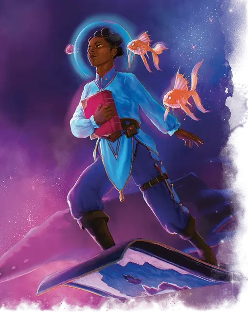

Воздушный пузырь
Air Bubble
2 уровень, Вызов

Время сотворения 1 действие
Дистанция 60 футов
Компоненты С
Длительность 24 часа
Классы Волшебник, Друид, Изобретатель, Следопыт, Чародей
Вы создаёте призрачный шар вокруг головы согласного существа, которого вы можете видеть в пределах дистанции. Шар наполняется свежим воздухом, существующим, пока заклинание активно. Если у существа больше одной головы, шар появляется только вокруг одной из голов (этого достаточно, чтобы избежать удушения, при условии, что у всех голов одинаковая дыхательная система).
На больших уровнях. Если вы накладываете это заклинание, используя ячейку 3-го уровня или выше, вы можете создать два дополнительных шара свежего воздуха за каждый уровень ячейки выше 2-го.